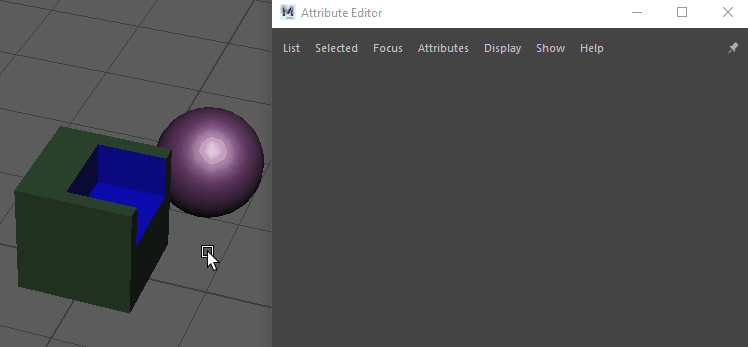

- 在选定布尔对象后，打开“属性编辑器”(Attribute Editor)，然后选择 polyBoolean 节点。
可以使用布尔堆栈编辑在布尔运算中组合的对象。
| 任务 | 描述 |
|---|---|
|
固定布尔堆栈 |
单击
 以固定布尔堆栈，即使在场景中更改选择时也保持其可见。 以固定布尔堆栈，即使在场景中更改选择时也保持其可见。

|
|
从“大纲视图”(Outliner)将新对象添加到堆栈 |
使用鼠标中键将对象从“大纲视图”(Outliner)拖动到布尔堆栈中的空白空间。
注： 添加对象之前，请在“属性编辑器”(Attribute Editor)中执行下列操作之一：
|
|
对层重新排序 |
将层拖放到堆栈中的新位置 注： 可以对所有层重新排序，包括将主层交换为其他层。任何网格（包括 MASH 的 ReproMesh）都可以替换主层。
|
|
一次选择多个输入对象 |
执行下列操作之一：
提示： 可以选择多个网格以在布尔堆栈中执行批量编辑。
|
|
变换布尔对象 |
在场景中选择对象或在堆栈中选择相应层，然后使用移动、旋转或缩放工具。 |
|
移除层 |
在层上单击鼠标右键，然后选择“移除”(Remove)。
注： 这会从布尔堆栈中移除输入对象，但它仍显示在“大纲视图”(Outliner)和场景中。
|
|
为输入对象启用平滑网格 |
在层上单击鼠标右键，然后选择“使用平滑网格输出”(Use smooth mesh output)，将输入对象的“输出平滑网格”(Out Smooth Mesh)连接到布尔节点的“输入多边形”(Input Poly)。这样，就可以将输入对象看作已缓存的表示，同时仍将布尔输出视作完全平滑的表示。（平滑）将附加到输入对象名称后，指示正在使用选定输入对象的平滑网格。如果在执行布尔运算时输入对象已启用“平滑网格预览”(Smooth Mesh Preview)，则会自动连接其“输出平滑网格”(Out Smooth Mesh)并启用“使用平滑网格输出”(Use smooth mesh output)。
|